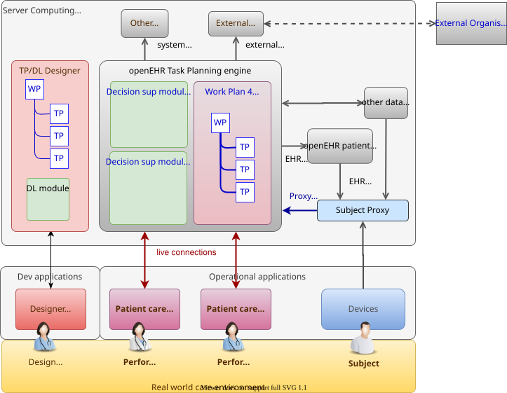
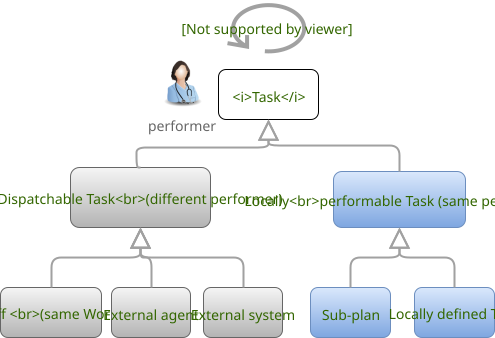
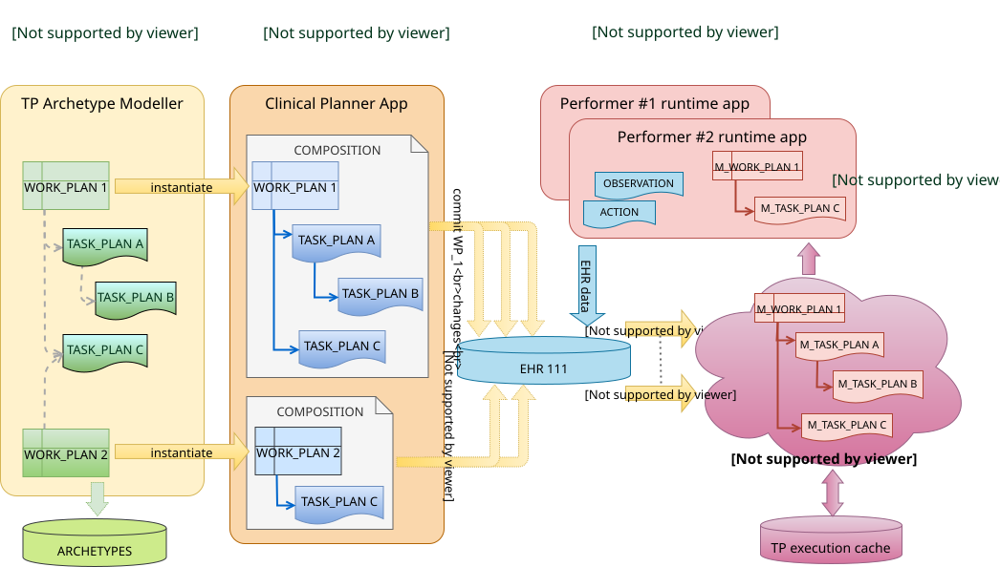
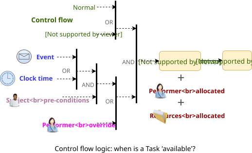
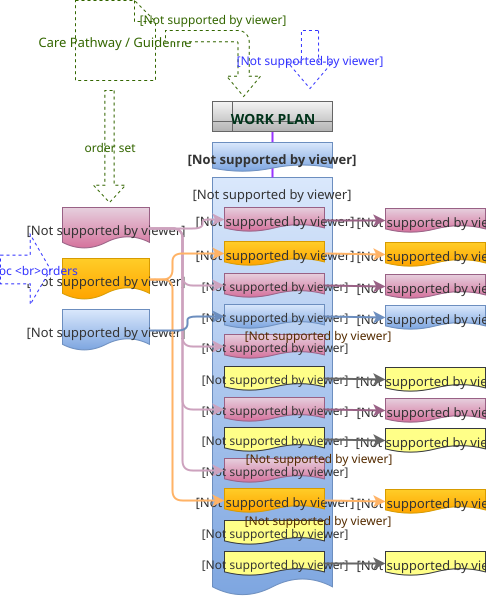
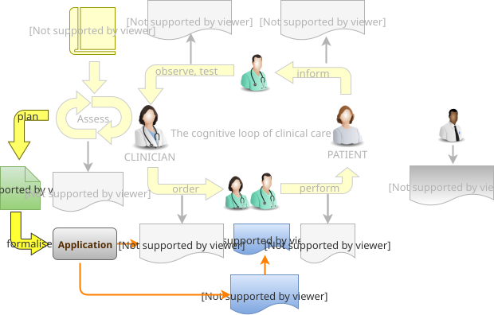

Design Principles
The following sections describe the key design paradigms underpinning the Task Planning model defined in this specification.
Conceptual Model
Conceptually, plans as defined in this specification are not standalone, and require decision logic as well as access to subject data in order to execute. Such logic is represented in decision logic modules, as described in the openEHR Process and Planning Overview.
One important consequence of this separation of concerns is that the Task Plan model described here uses symbolic references to refer to both proxy values (patient state, previous diagnoses etc) and decision logic functions, rather than including expressions inline, in the manner of most workflow languages. All 'expressions' are thus represented externally, either within decision logic modules or proxies. Both of the latter are maintained as independent knowledge artefacts and used by plans.
Computational Basis
A basic choice in the architecture presented here is that it is executable in the sense that Plan definitions have an objective computational meaning and can therefore be executed according to the semantics of the model defined in this specification. This does not of course mean that the resulting system performs the work (although it may contain software agents that perform some particular Tasks). Instead, the resulting executable artefacts and application(s) when executed in a real world socio-technical environment that includes human and other actors, will convert disparate workers with weak communication into an integrated, coordinated team.
This follows the YAWL approach [1], such that no Plan defined according to this specification has ambiguous meaning.
Computation Context
This specification describes the models and semantics for task plans and their execution by an abstract openEHR Task Planning execution engine ('TP engine'). The TP engine executes both Plans and related Decision support modules. It obtains information on the patient via the Subject proxy, which as described above, converts data available from the EHR and elsewhere to a virtual view of the patient. It is assumed to operate in a back-end computing environment in which other systems exist with which the TP engine communicates. A key system is the openEHR EHR system, via which openEHR EHRs are accessible to the TP Engine.
Outside of the environment exist other organisations with which the TP engine communicates by generic means (ultimately, email, phone calls, etc), mediated by an appropriate communications / notification system within the environment.
Users who act as performers of tasks are connected to the engine via applications that communicate to the TP engine via the API of the TP Engine. These applications may be dedicated to Task Planning or a combined openEHR application context containing Task Planning components or forms. Users who act as plan designers are connected to a task planning designer system via a dedicated designer application.
The computational environment is shown below.

One of the major differences between the openEHR Task Planning architecture compared to other workflow architectures is that it can rely on shared access to persistent patient EHRs as the location in which context data can be read (e.g. patient variables) and in which records of performed tasks are ultimately stored, in the form of openEHR Compositions containing Entries, in the usual way.
Separation of Definition and Execution
One of the most basic tenets of workflow processing is assumed here, namely the clear separation of Plan definition and Plan execution. This specification distinguishes more than the usual two levels of representation, as follows:
-
Plan template, representing re-usable Plans and Plan components, from which Plan 'definitions' can be generated;
-
Plan definition, the concrete representation of a particular Plan that may be directly executed;
-
Plan execution, the execution of the plan, which may be long-lived, e.g. days, months, years;
-
Task execution, the runtime execution of part(s) of a Plan during user sessions, via use of applications etc.
The first level is implemented by Archetyping of the definition-level model defined in this specification.
Conceptual Elements
Work Plan
The top-level formal concept defined is the Work Plan, which consists of one or more Task Plans. The Work Plan is a definition of work to be performed by one or more workers in order to achieve a defined goal with respect to a single subject of care. A different subject requires a different instance of a Work Plan. Goals are often defined by published guidelines or care pathways, and the overall structure of work defined within a Work Plan and its constituent Task Plans may well be structured according to such publications.
Within a Work Plan, each included Task Plan is a definition of work to be performed in a single work context, by a 'principal performer' and possibly other participants. Multiple Task Plans occur for two reasons:
-
distinct performers working in different contexts, across which managed hand-offs are required;
-
sub-plans subordinate to a parent Task Plan, to be performed by the same worker.
Sub-plans occur to allow re-use of Plans for smaller pieces of work and also to provide a means of controlling the detail level of work differently for performers of different experience levels.
The entirety of the Work Plan definition is assumed to be executable within a single computational context (i.e. a 'Task Planning engine'), in which methods of notification and worker communication are available, enabling the state of progress of the work defined in the Plan to be fully represented. A Work Plan will often be limited to a single enterprise, but this need not be the case, as long as all of its Task Plans communicate within the same Plan execution context.
More typically, some jobs required by a Work Plan are performed in another organisational context entirely, and from the point of view of the original Work Plan, the second organisation is seen as a 'black box' to which a request can be made and a result might be returned. A common example is a hospital clinical workflow that at some point requires a laboratory result, which is processed by an external organisation. These situations are handled by an 'external request' Task type.
Task Plan
The actual definition of work to be done in one work context with a principal performer consists of Tasks stated within a Task Plan. The most basic structuring notion required is that of a sequential list of Tasks, enabling the representation of the set of steps in a typical linear workflow such as making tea or cleaning a wound.
However, in the real world, almost every job can be sub-divided into smaller pieces of work in a fractal nature. This simple fact requires that the general structure of Tasks is actually a hierarchy, within which sequential Task lists occur commonly (and will be the top-level structure in simple cases). The formal construct provided for this is the Task Group, which may contain Tasks and more Task Groups.
The Task concept defined in this specification is relatively straightforward in the abstract: it corresponds to a separately performable item of work for a performer to execute. A Task within a Plan has a lifecycle whose states indicate whether it is planned, available, complete etc.
In business terms, a Task typically corresponds to:
-
an explicit level of clinical responsibility, e.g. nurse administration of a drug, single observation of patient vital sign etc;
-
an explicit level of re-imbursement / billing;
-
granularity of check-list and protocol single items, designed to be signed off as performed;
-
a particular planned time of execution.
Parallel and Sequential Execution
With hierarchy and sequential execution semantics, a great many types of work can be represented. However, some sets of Tasks can be performed without regard to order - i.e. in parallel. The model defined here therefore includes an execution type indicator at the Task Group level, so that manner of performing the work items within a Task Group - with or without regard to order - can be indicated. In purely sequential Task Plans, there is only one execution path. Parallel execution enables the possibility of multiple execution paths during a Plan execution.
Conditional Structures
The power of the Task Group / Task structure can be significantly augmented in another dimension with the addition of conditions, to create conditional structures. These can be used to represent a variety of logical choice structures, equivalent to the following programming concepts:
-
if/elseif/else: a multi-branch logic chain with any condition on each branch, evaluated in order;
-
switch: a multi-way logic structure based on a single condition and branches for multiple value sub-ranges;
-
rule-set: a chained event-driven rule structure whereby each branch is defined to fire on reception of a specific kind of event.
In a purely deterministic view of workflow, the above types of conditional structures correspond to the situation where the conditions are fully defined in the Plan, and execution unequivocally follows the paths according to the evaluation results of each condition. However, in a realistic system this is only one possible mode of execution, because the condition expressions might not always correctly represent reality, due to being approximate or simply deficient. In such cases, the user may need to override the ordinary execution path. This can easily happen in a clinical scenario, where the condition structure is defined as an attempt to represent recommendations that may be overridden by better knowledge on the part of the runtime user (e.g. an oncologist).
A third possibility exists as well: conditional pathways whose conditions are not encoded at all in the Plan definition, i.e. are only known by runtime users. Such 'ad hoc' conditional structures occur where no clear or simple algorithm can be stated for choosing each path. A typical example in a clinical situation is a physician determining the complex trade-off between efficacy and side-effects for which drug regime to use for a complex condition such as cancer.
There are thus three levels of human/system interaction with respect to conditional processing:
-
fully automated: formal conditions fully express the criteria for altenate paths;
-
decision support: formal conditions are an attempt to provide support to users, but may be overridden;
-
ad hoc: alternate pathways are defined, but the criteria for entry are provided by the user at execution time.
Summary
The leaf level constituents of a Task Plan are Tasks of various kinds, including inline-defined Tasks; requests to other contexts within the same Work Plan; requests to external contexts and requests to IT systems and services.
We can summarise the above-described structure in reverse:
-
Task: a separately performable unit of planned work at any level of granularity; may be defined inline or via sub-plan;
-
Task Group: a group of Tasks and/or more Task Groups within a Task Plan that are to be executed on the same basis, e.g. sequential, parallel.
-
conditional Group types: special kinds of Task Group that enable conditional logic structures to be represented in a Plan.
-
Task Plan: a logical set of Tasks for a single performer context to achieve a defined result within a larger plan.
-
Work Plan: top-level structure containing related Task Plans needed to implement an intended outcome for a subject of care.
Graph Structure
The Task Group construct replaces the node references found in traditional workflow formalisms such as BPMN, and defines the static graph structure of the 'normal flow' of a Task Plan by implication. Only exceptions to the normal flow are represented with explicit node references.
This provides significantly more power than an explicit graph structure for the normal flow, since Task Groups can have rules attached to them indicating which members should be executed and when, rather than relying on explicit links. The sequential / parallel indicator is one such simple rule. Additional rules could be added, such as:
-
at least N members must complete for group to complete
-
exit group on first succeeding task
These more sophisticated rules are represented in a generic way, with the Task Plan engine assumed to implement the underlying mechanics.
Work Context
A fundamental concept in this specification is work context, which is the factor that distinguishes one Task Plan from another, i.e. one Task Plan (and any sub-Task Plans) corresponds to Tasks to be performed in a single work context. Work context is defined as a single, contiguous cognitive flow in the real world (i.e. not in the computational representation, which must always be considered an approximation updated in snapshot fashion) in which work can be performed seamlessly by one or more performers on a single subject. Concretely, this means that the flow of cognitive activity is unbroken during the work. This may extend over time and even distinct physical spaces, such as in the case of tele-consultations. Normally a single cognitive flow corresponds to a single actor, usually a person, but this is not always the case. More than one person may be involved in performing work on the same subject, but essentially working as one, and relying on real-time verbal or other communication to achieve the effect of a single mind.
Continuous knowledge of the work, and continuous real-time communication with oneself ('train of thought') or directly among multiple performers is what characterises a given context. A different context is one with different cognitive actors, and within which communications are performed by notifications at certain time checkpoints, typically just the beginning and end.
Since parallelism is possible within a single Plan, a performer may be working on more than one thing at once, within the same context, for the subject. In other words, a work context (and a Task Plan in execution) may contain multiple execution paths at a point in time.
Context Switch and Fork
If work has to be stopped within one context and passed to a different work context, a context switch is required, and the first worker or team will wait for a response. If the context switch is within the same Work Plan, it is termed a hand-off, which entails switching Task Plans. A context change is also required to request work from an environment external to the current Work Plan.
A second kind of change of control is a context fork, whereby the current performer signals to another context to start doing some work, but continues doing his own work.
A context switch is commonly known as 'block and wait' or synchronous processing, while a context fork is known as asynchronous or parallel processing.
The following diagram shows a taxonomy of task types that result from the above considerations.

How does a hand-off actually work? There are two distinct scenarios. Consider a hand-off situation in which one worker is a radiographer taking images of the patient, and who once finished, will hand over to a radiologist, who will assess the images. In this case, the inputs required by the radiologist - the images - are immediately available online, so she can begin her work immediately. The hand-off can therefore be effected by means of notification to the radiologist. In terms of control flow, the radiologist (at least in situations like Emergency Department, acute stroke case) is driven by events: as soon as new images are ready, she works on them. Accordingly, in terms of Task Plans, when the radiographer has completed his Task Plan (doing the imaging), the radiologist is notified, and her acceptance of the work will cause the relevant Task Plan to be activated.
A second common scenario is typified by the first worker being a reception staff-member who receives a patient in a (non-emergency) clinic. When he has completed the usual appointment and administrative record check, he tells the patient to wait in the waiting area for the doctor. The hand-off to the doctor in this case entails the patient (i.e. the 'subject') being physically available when the doctor is ready, and the doctor having the patient visible on a list. The control flow in this case is: the second worker processes his patients from the queue, and will see a particular patient when they get to the head of the queue. Consequently, there is no point in notifying the doctor as such; instead, the latest patient is added to the queue, and seen by the doctor in his turn.
We can state the general question as being when the second worked in a hand-off should commence his work. It could be:
-
immediately - this will be the case of a radiologist reviewing an MRI for an acute stroke;
-
when the worker is ready - e.g. the case where it’s a GP working through a list of patients in a waiting room;
-
when the patient arrives - e.g. when a patient is sent for a transfusion, the transfusion unit should start on the patient as soon as he/she appears in that part of the hospital.
Context Continuity over Worker Shifts
Work context is maintained during a work session during which the work is done by one or more performers. But if the work extends over hours or days (e.g. chemotherapy), worker shifts will end and the work will be taken up by the same or new workers on the next day. The Task Planning model does not consider this kind of worker replacement to be a context switch, since it is assumed that the Task Planning runtime system maintains all relevant context information, available for use by new workers. All that is required to maintain the context is for de-allocation and re-allocation of the work to the new (i.e. replacement) performers.
Principal Performer
Following the notion of work context described above, a Task Plan is defined to have a principle performer, that is to say, a single logical executing actor. This is often a single person (or a device or possibly a software service), but might equally be a group of personnel, e.g. ward nurses, who execute the steps of a Task Plan during and across shift boundaries (wound dressing, turning patients, IV maintenance etc). In these cases the separate individuals constitute a 'single mind' as described above, with respect to the subject of care and the work, and their communication is not directly represented within the Task Plan.
In addition to the principal performer, other participations can be specified for any contained Task in a Plan. This allows the Plan to indicate where specific members working in a single cognitive work context should be responsible for specific individual Tasks. However it is assumed that the principal performer is responsible for all actions, and is also the notifier of action completions and cancellations.
The principal performer and other participants are specified in the Plan in terms of professional roles, and optionally a specific agent. This might in some cases be the patient.
Where an overall work plan requires separate actors who do not operate within the same work context, e.g. the various specialists and other professionals who perform different tasks with respect to an acute stroke patient, separate Task Plans each with their own principal performers are required. In this situation, coordination between the various actors is achieved by context switching and notification.
During the execution of a Task Plan, at any given time, a particular physical actor must be assigned as the principal performer, in order for the Plan to proceed. This assignment will change over time for long-running Plans, due to shift changes, out of hours contacts, worker vacations and so on. In this model, worker changes are handled by runtime allocation and are not treated as context switches. The allocation concept is described in more detail below.
Time and Wait States
Many tasks in the real world can only be performed when certain events occur or conditions become true. This model treats such conditions as wait states, based on events or time.
Time is understood in three possible ways:
-
as a relative offset from the start of the Plan timeline, when it is activated;
-
as an absolute time as marked on a calendar;
-
as the moment at which an event occurs.
The first two are converted to artificial events by the execution system internal clock reaching markers on the Work Plan timeline or calendar. For real event-based times, the kinds of events recognised include the following:
-
timer event: an event caused by a timer that expires;
-
state trigger: a condition based on one or more watched variables available from the computation environment, including subject variables (sex, vital signs, etc) and variables relating to clinical processes, e.g. 'time since emergency admission'.
-
task transition: an event generated by the state transition of a Task during execution so far, e.g. the previous Task completing;
-
callback notification: an event generated by a notification received on completion of a Task dispatched to a different Plan or an external system;
-
system notification: an external event is notified to the system by a user, e.g. receipt of a phone call.
-
manual notification: an external event is signalled manually to the system by a user, e.g. receipt of a phone call.
Tasks can be defined to wait on either one or more events.
Levels of Definition and Representation
Task Plans are defined, refined and used in various phases in time. A number of related technical representations are used, each appropriate to its phase.
| Phase | Representation | Purpose |
|---|---|---|
Design time |
Definition model |
At the model level, a Work Plan and its constituent Task Plans are represented in the form of openEHR templated archetype(s) based on the Task Planning definition model of this specification. Multiple layers of modelling may be used to represent a range of Plan Templates from the more general to the specific, and then templated to define a near subject-specific Plan. For example a general model may be built to represent a chemotherapy Plan; a specalised form of this may represent R-CHOP protocols; an even more specialised one may represent a particular institution’s form of this protocol. |
Clinical time - |
Instantiated definition |
When a Work Plan model is used for a subject (i.e. patient), it is instantiated from its templated archetypes, creating an instance of the Work Plan definition (i.e. in the class/instance sense). At instantiation time, Task Plans re-used by reference within a Work Plan at the archetype level are instantiated as distinct instances for each such reference. After Work Plan instantiation, the planner may adjust it in any way that maintains conformance with its archetypes and template, e.g. to provide values for particular parts of the model such as medication dosages, that correspond to the particular subject. |
Clinical time - |
Materialised definition |
Close to Plan execution time, a Work Plan definition will be materialised, i.e. instantiated for execution. At the point of materialisation, the definition model must be published and persisted, guaranteeing the its availability as the reference model for its materialised expressions. It may be materialised any number of times, corresponding to the distinct number of instances of use required. In the materialised form, repeatable sections of the definition are 'unfolded' into literal sections, for as many repetitions as required by the relevant performer(s). Accordingly, parts of the materialised expression of a Plan may have an N:1 relationship with the original definition form. Unreachable decision paths may be removed, and where possible decision nodes, simplifying the materialised form compared to the definition form. The materialised form has its own class model containing additional data items to enable run-time tracking of the Plan as it is performed. During execution time, various kinds of deletions and modifications to the materialised representation are possible, corresponding to changes in plan that respond to unexpected events. |
Clinical time - |
Runtime instantiation |
Since a Plan execution may run over many hours, days or longer, the materialised expression will in general correspond to something larger than the literal in-memory instantiation of (parts of) the Plan required during any given user-application session during which some or all of the Task Plan might be performed. The part of the plan currently being displayed, performed, tracked etc, is known here as the 'run-time instantiation', and consists of a subset of the total materialised form instances. |
Phases of Work
In this scheme, archetype- and template-based modelling is used as much as possible during the design phase, in order to create a hierarchy of re-usable models that are progressively more specialised, until close-to-patient models are achieved, typically as templates. This enables the power of the archetype modelling formalism, including specialisation and composition to be used freely, in a similar manner to an object-oriented programming environment.
When the design phase is complete, a Work Plan template may be instantiated by a clinical planner in the planning phase, to create definitions instances that are stored in a Composition in the patient EHR. During this phase, adjustments to the definition. Multiple workers may undertake such modifications, which may be performed over some time. At any given time, a particular patient EHR may contain multiple Work Plan definitions.
When a Work Plan is ready, the execution phase can begin, done by materialising the Plan definition from the EHR into the TP Engine, where it can be executed. It is the materialised expression of a Plan that is used to record all Plan-related actions by Task performers.
A Plan 'execution' may be long-lived, and extend beyond worker sessions in individual application invocations. The execution state will therefore be persisted for such Plans. During the execution phase, multiple runtime executions will occur, during which some part of the Plan will actually execute with the relevant users (i.e. performers) and applications.
As the work is performed in the execution phase, the results are documented with openEHR Entries, such as Actions and Observations.
The following figure illustrates these phases of work and the series of representations of Work Plans as they progress from archetyped models to runtime executions.

Execution Concepts
Plan Execution Lifecycle
A Work Plan definition can be executed by being materialised. The model recognises three states in the execution phase, as follows.
-
materialisedstate: after creation of the materialised Plan, the Plan may be modified by its user(s), and pre-allocations done of performers. -
activatedstate: the materialised Plan is activated when the users want to proceed. Connections must be established between the Plan execution context and various channels or APIs via which performer allocation and communication can be achieved. Activation establishes the zero point of the execution clock, and will cause performer allocations and generate various kinds of notifications as time moves forward. During the work, Tasks become available as earlier Tasks are completed or cancelled. When a Task is available to be done, the performer has various options, including doing the work, cancelling the Task as not needed, completing the Task, aborting it, and abandoning the current Task Plan. -
terminatedstate: A Work Plan terminates when a path taken through the materialised Task graph terminates, either due to finishing, or due to abandonment at an intermediate Task. The Work Plan as a whole returns a termination status of success or fail, which may be used to control behaviour if it is part of a chain in which a context switch follows termination.
Allocation
Since a Task in a Task Plan being executed at runtime represents the Plan execution system’s knowledge of some work being performed in the real world, a way to connect the Plan as it is in the system (e.g. as shown on a UI application, or via notifications such as instant messaging) to the real-world actors performing it is needed. Following YAWL, the architecture described here treats allocation of work to a performer as a formal activity during Plan execution.
Conceptually, worker allocation is understood in the following way. Firstly, it is assumed that Tasks can be allocated to two types of worker resource:
-
individuals, specified in the Plan definition in terms of role and/or function within principal performer and other participations e.g. 'cardiologist';
-
a worker pool, i.e. group of equivalent workers, e.g. nurses on a particular ward; here, any one of the workers can perform a given Task, and the workers may swap over time.
Secondly, at runtime, the actual worker will be resolved at execution time as follows:
-
the Plan or Task is assigned to a real individual or worker pool;
-
an appropriate worker claims a Plan (if Plans are posted somewhere, awaiting workers) or accepts the Task (if Plan invitations are sent to individuals).
It remains the business of the organisation and also the Task Planning engine to resolve how these choices are made.
As per YAWL, more sophisticated implementations of Task Planning may offer numerous allocation strategies, such as first-available, quickest-to-complete, least-frequently-used and so on.
Task Lifecycle
Every Task in a Plan has a lifecycle described by a state machine. The states represent the state of a real world item of work, as known by the Plan execution system; setting them is entirely reliant on the system receiving input from performers. The successful execution path is through the states planned ⇒ available ⇒ completed, with other terminal states cancelled and abandoned available for cases where a Task is cancelled and abandoned respectively. Here, cancelled means 'not needed', i.e. the principal performer determined Task could be cancelled before or during execution, without compromising the Plan. Conversely, the abandoned state indicates that the performer cannot do or complete the Task, or the rest of the Plan. Thus, abandoned for a Task means abandonment of the current Task Plan.
From the viewpoint of Plan execution, the final state of a Task execution determines whether the Plan remaints in the active state, or whether it enters the terminated state. If the Task terminates with completed or cancelled state, it is considered to have succeeded, and the Plan remains active. If the Task is abandoned, it is considered as failed, and the Plan terminates with a failure status.
A special transition override is used to force a Task to into the available state; this represents a performer explicitly overriding preconditions or subject preconditions.
Availability
A Task becomes available to perform when three kinds of condition are met:
-
Execution control flow reaches the Task;
-
Any waited-on external event occurs;
-
Subject preconditions if any, are met.
Control flow reaches a Task in a Plan when either preceding Tasks have been performed (local control flow) or a previously dispatched external Task completes, whose restart location in the current Plan is the current Task.
External preconditions (described above) are met when a point in clock time is reached or an event notification is received.
If the control flow and external preconditions are met, a Task will still not be available until any subject-related preconditions are satisfied. These are conditions that may be specified to ensure the Task is only performed if it is clinically appropriate and safe to do so, such as 'systolic blood pressure < 160 mmHg'.
Since the Task Plan cannot presume to have perfect knowledge of the real world situation, the performer is always allowed to override the external and subject pre-conditions, due to better knowledge. In such cases, the control flow requirement still holds - since this can already be 'overridden' by the performing cancelling preceding Tasks where appropriate.
When a Task does become available for execution, nothing will happen until a performer is allocated to do it. When an available worker is allocated, the Task may be commenced, and further life-cycle states can be reached, i.e. completed, abandoned etc.
The following diagram illustrates these concepts.

Adaptive Modification and Exception-handling
One of the major challenges for any workflow system is that of being able to handle unplanned exceptions at runtime and adapt. The Task Planning model makes a key assumption that simplifies deviations at runtime, which is that the human (or other) performer always knows best. This means that Tasks posted to be done by the system are always advisory, and their details (such as time) are advisory. Accordingly, the model provides the following support for execution-time adaption:
-
logical deletion: Tasks can be skipped by two types of cancellation in the lifecycle:
cancelled(not needed) andabandoned(abandon current Task Plan); ifcancelledis used, this has the benign effect of skipping past a Task; -
logical addition: work items that are not represented as Tasks in a Task Plan can always be done, such as making extra patient observations or performing unplanned patient actions (e.g. refit a catheter, change a dressing); in openEHR they will always be recorded in the normal manner via Observation and Action Entries;
-
overrides: various aspects of a Plan definition can be overridden at runtime, such as Task execution time and subject preconditions (such as BP < 160 mm[Hg]). Override is represented in the system as an alternative lifecycle transition that puts a Task into the
availablestate even if not all conditions have been met for availability.
Relationship of Tasks with existing openEHR Entry Types
Within the phases of clinical planning and execution time described above, the Task Plan is not the only information artefact that may be created. The existing openEHR model ENTRY types provide the standard way to represent orders, via INSTRUCTION, and order-related performed activities, via ACTION. In addition, the usual OBSERVATION, EVALUATION and ADMIN_ENTRY types are used to record observations, diagnoses, and administrative events as they occur in clinical time. In abstract terms, Instructions may be understood as formal statements of 'what is to be done', and the other types, as records of 'what was done'. However, Instructions are most suited to concise representations of orderable actions, particularly medication administration, but not for general purpose detailed plans of events. The addition of Task Plans provides a way to specify such plans more flexibly, and in a step-by-step manner.
Both Instructions and Plans may be fully or partially defined by care pathways and/or guidelines, equally, they may be ad hoc developed in the 'old school medicine' sense. The following figure illustrates the relationships among care pathways, the existing openEHR Entry types and Task Plans.

In simple cases, a Task Plan may just be the list of Tasks to fulfill one order, i.e. a single INSTRUCTION prescribing a course of antibiotics. The general case however is that the Work Plan corresponds to a clinical goal which implicates multiple orders, such as the CHOP chemotherapy mentioned above.
Consequently, not every Task in a Work Plan is associated with an order, illustrated by the yellow Task objects in the above figure. While a typical case is that a Task corresponds to an openEHR ACTION that has not yet been recorded (and which normally has a driving INSTRUCTION), it may also correspond to an ACTION that has no INSTRUCTION or indeed an OBSERVATION or possibly an EVALUATION (perhaps some kind of check during a procedure). Indeed, there is also no reason why a Task Plan cannot consist of Tasks that define administrative work and would be documented with openEHR ADMIN_ENTRYs.
We can infer from the above that the main driver of a Task Plan isn’t in general an order, but a care plan or guideline that usually includes orders, or else plain old ad hoc planning.
A high-level view of how clinical work generates openEHR information can be visualised conceptually with a modified version of the Clinical Investigator process diagram as follows:

According to this scheme, WORK_PLAN, TASK_PLAN and TASK are new types of information that can be committed to the EHR.
Order Semantics versus Plan Semantics
Despite the above explanation, the difference between Instructions (as defined in openEHR) and Task Plans may not be completely clear. However, there is a key difference, which is the semantic level at which the two are expressed. A typical order, represented in an openEHR INSTRUCTION has an algorithmic form, such as "Amoxicillin 3 times a day, orally, for 7 days". Although healthcare professionals do not typically think about it, this expression is in fact a small program that is mentally interpreted to produce resultant actions such as giving one tablet at 9:15 am, one at lunch and so on.
We can think of a Task Plan for ordered actions as the interpreted form of the original order statement(s), that is to say, a completely 'unfolded' list of single Tasks in time such as 'give 1 Amoxycillin oral tab at lunch'. This is a form suitable for displaying on work lists, checking off and ensuring no mistakes are made. When a Task is performed, it will still give rise to the appropriate openEHR Entry recording the details, such as 'gave 1 Amoxycillin tab at 13:37'.